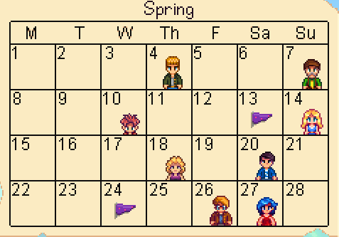
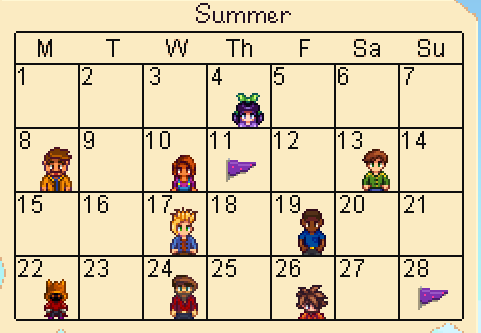
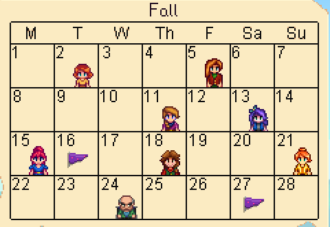
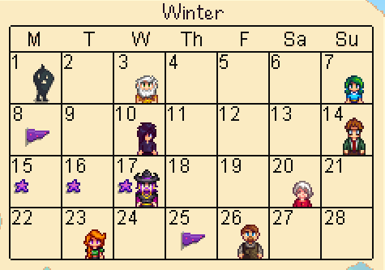

CLICK TO TOGGLE SPRING CALENDER

CLICK TO TOGGLE SUMMER CALENDER

Stardew Valley General Guide
Basic Guide:
- The overall goal is to have fun while expanding your farm.
- There is a community center where you have to bring many differnt foods you have grown along with things you can get around the world by fishing, foraging, mining, and combat. These are called collections.
- There are skills that you can level up over time by completing tasks relating to the skill. Leveling up skills can help you to unloack craftinf recipes.
- Each "season" lasts 28 days
- The main currency is called "coin" and looks like a gold coin. You can sell things that you obtain to get coin and you can buy many things with them.
A Guide to the Seasons (click on season to toggle it)
CLICK TO TOGGLE FALL CALENDER

CLICK TO TOGGLE WINTER CALENDER

Tips and tricks about Spring
Farming on the first day and going forward:
- Plant lots of beans since they take a while to grow but keep producing all season long. Save at least one for collections.
- Plant lots of parsnips since they grow quickly and are cheap. You also need to save five gold tier parsnips and one normal one for collections.
- Plant and save at least one potato for collections.
- Plant and save at least one cauliflower for collections.
- If you're interesting in making the most money possible, you should plant more cauliflower, as you will get an average of 7.9 coins a day which is the most efficent plant in first year Spring. The second most profitable is beans, which gives you an average of 7.2 coins a day.
Foraging tips:
- During the spring, you can find wild horseradish, daffodil, leek, dandelion, spring onion, morel, common mushroom, and salmonberry by foraging.
- You can forage almost everywhere on the map that isn't water.
- For collections, you will need one wild horseradish, one daffofil, one leek, and one dandelion
Tips for Spring fishing:
- In the Ocean when it is sunny you can get anchovy, herring, sardine, flounder, and halibut. When it is raining, you can get eel.
- In Rivers when it is sunny you can get smallsmouth bass, and sunfish. When it's raining, you can get shad and catfish.
- For collections, you should save one sunfish, one catfish, one shad, one largemouth bass, one carp, one bullhead, one sardine, one bream, and one eel.
Tips and tricks about Summer
Farming on the first day and going forward:
- Plant lots of hops since they take a while to grow but keep growing throughout summer and fall.
- Plant and save at least one tomato for collections
- Plant and save at least one hot pepper for hotcollections
- Plant and save at least one blueberry for collections
- Plant and save at least one melon for collections
Foraging tips:
- During the summer, you can find spice berry, grape, sweet pea, red mushroom, fiddlehead fern, and common mushroom by foraging.
- For collections, you will need one grape, one spice berry, and one sweet pea
Tips for Summer fishing:
- In the Ocean when it is sunny you can get pufferfish, tuna, red mullet, octopus, super cucumber, tilapia, flounder, halibut, and crimsonfish. When it is raining, you can get red snapper.
- In Rivers when it is sunny you can get rainbow trout, pike, sunfish, sturgeon, and dorado. When it's raining, you can get shad and catfish.
Tips and tricks about Fall
Farming on the first day and going forward:
Foraging tips:
Tips for Fall fishing:
- In the Ocean when it is sunny you can get anchovy, herring, sardine, flounder, and halibut. When it is raining, you can get eel.
- In Rivers when it is sunny you can get smallsmouth bass, and sunfish. When it's raining, you can get shad and catfish.
Tips and tricks about Winter
Farming on the first day and going forward:
Foraging tips:
Tips for Winter fishing:
- In the Ocean when it is sunny you can get anchovy, herring, sardine, flounder, and halibut. When it is raining, you can get eel.
- In Rivers when it is sunny you can get smallsmouth bass, and sunfish. When it's raining, you can get shad and catfish.